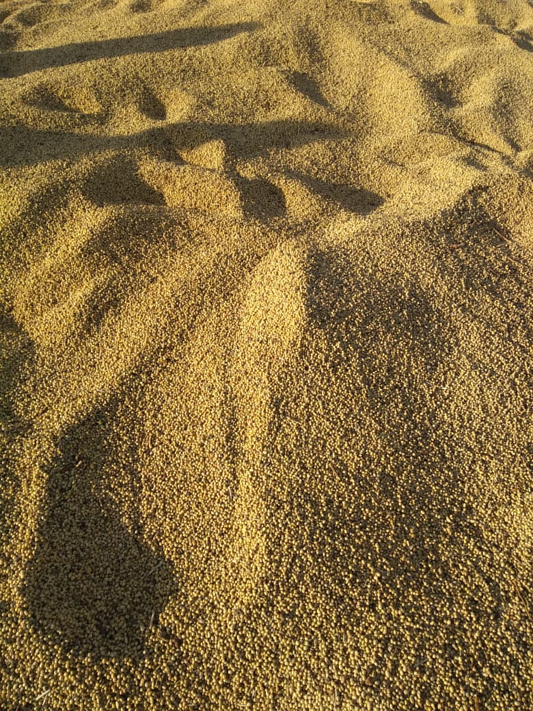

Soybean Seeds for Sell
1 Fresh and Best quality Soya-Seeds
नमस्कार,
आमच्या वेबसाईटला भेट दिल्याबद्दल आपले स्वागत आहे.
presented by : Ghule Farms
येथे आपण जाणून घेऊ शकता जैविक तंत्रज्ञानाचा वापर करून करण्यात आलेल्या सोयाबीन शेती संदर्भात माहिती.
1 कशी करावी आधुनिक शेती ?
1.1 तेही कमी खर्चात आणि अतिशय कमी पाण्यात !

2 Details of Soya Seed
सोयाबीन बियाणा संदर्भात अधिक माहिती
The Soybean which we produce is very nutrishious. below we explain how we produce this kind of unique soya seeds.
आम्ही पिकवलेली सोयाबीन अतिशय चांगल्या दर्जाची असून खाली त्याचे स्पष्टीकरण देण्यात आले आहे.
2.1 Details
we're farming with soya farm since last decay and we're highly skilled at production of soybean. we've track record of producing soyabean at minimal water and highly energitic crops.
आम्ही सोयाबीनची शेती जवळपास दहा वर्षांपासून करत आलो आहोत आणि या शेतीसंदर्भात आमच्याकडे अत्याधुनिक ज्ञान असून आम्ही नेहमीच त्याचा वापर नवनवीन प्रयोगां मार्फत आमच्या शेतामध्ये करत असतो.
2.2 Treatment of our Farm
शेती करण्याची आमची पद्धत
we're using micro-bacteria which help crop to grow its roots and helps to absorb nytrogen from our atmosphere. once enough N2 is absorbed then plants growth is done at much faster speed and crop becomes helthy.
आम्ही वापरतो जैविक सूक्ष्म्माणू चे सोयाबीनच्या रोपाची अधिक वाढ करून मुळाना सक्षम बनवतात.
Here is the video of our crops which grows till its full potential.
आमच्या शेतातील रोपांची व्हिडीओ खाली दिली आहे.
How is our crops?
कशी वाटली आमची सोयाबीन ची शेत्ी ?
3 Contact us
if you would like to buy these soyabean seeds and micro-bacteria to plant it in your farm then contact us
घुले सोयाबीन शेती बद्दल अधिक माहिती जाणून घेण्यासाठी आम्हाला संपर्क करा
- नाव : श्री. जगन्नाथ गंगाधर घुले
- मोबाईल नंबर : +91 9767786339
- ईमेल : jagannathgghule@gmail.com
Thanks for your visit
आम्ही आपले आभारी आहोत.
Date: 14/06/2020
Created: 2020-06-20 Sat 12:45
Connect Us
Swing by for a cup of coffee, or leave us a message: